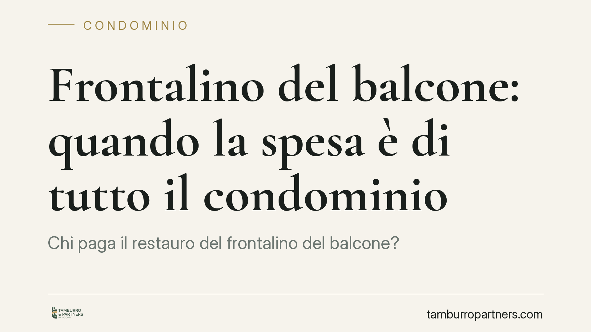

Frontalino del balcone: quando la spesa è di tutto il condominio
Chi paga il restauro del frontalino del balcone? Un recente orientamento della Corte di Cassazione conferma che, quando l'elemento svolge funzione estetica prevalente nella facciata, rientra tra le parti comuni ex art. 1117 c.c. e la spesa grava su tutti i condomini secondo i millesimi. Un chiarimento rilevante per amministratori e proprietari alle prese con la ripartizione dei costi.

Il caso
I balconi sono da sempre terreno di contenzioso condominiale. La domanda ricorrente: chi sostiene le spese di manutenzione e restauro? La risposta non è univoca, perché dipende dalla funzione concreta che il singolo elemento svolge nell'edificio.
La questione torna d'attualità per effetto di un recente arresto della Suprema Corte, che ribadisce un principio ormai consolidato: il frontalino del balcone — la fascia frontale che chiude lo sbalzo — va qualificato come parte comune quando assolve una funzione estetica prevalente rispetto a quella di mero servizio dell'unità immobiliare. In tal caso la spesa si ripartisce tra tutti i condomini, a prescindere da eventuali responsabilità individuali.
Inquadramento normativo
Il riferimento è l'art. 1117 del codice civile, che elenca le parti comuni dell'edificio. La giurisprudenza distingue, nell'ambito del balcone, tra componenti a servizio esclusivo del proprietario e componenti che concorrono al decoro architettonico della facciata.
Il criterio decisivo è funzionale, non nominalistico. Gli elementi strutturali che reggono il balcone (soletta, solaio) e quelli a servizio esclusivo dell'unità (pavimentazione, parapetto interno) restano di norma a carico del singolo proprietario. Al contrario, gli elementi che si inseriscono nel prospetto dell'edificio e ne caratterizzano l'aspetto — frontalini, rivestimenti, fregi, cornici — possono rientrare tra le parti comuni proprio in quanto contribuiscono al decoro della facciata, bene comune per eccellenza.
Quando prevale questa funzione ornamentale, la spesa è ripartita tra tutti i condomini in base ai millesimi di proprietà, secondo le regole generali.
Poteri d'urgenza e ratifica assembleare
Un secondo profilo riguarda la gestione dell'intervento. L'art. 1135 c.c. riconosce all'amministratore il potere di ordinare lavori di manutenzione straordinaria che rivestano carattere urgente, salvo riferirne alla prima assemblea utile per la ratifica.
Si tratta di una facoltà circoscritta: l'urgenza va intesa in senso stretto, come necessità di intervenire senza indugio per evitare danni o pericoli. Al di fuori di questi casi, la competenza a deliberare i lavori resta dell'assemblea. La successiva ratifica consente di sanare l'operato dell'amministratore e di consolidare la relativa spesa.
Implicazioni pratiche
Per il proprietario la distinzione è dirimente: se il frontalino ha funzione estetica prevalente, non può essergli addossata l'intera spesa come se fosse manutenzione privata. Al tempo stesso, non potrà pretendere il riparto condominiale per interventi che riguardano parti a suo esclusivo servizio.
Per l'amministratore il tema impone cautela nella qualificazione della spesa e nella convocazione dell'assemblea. Un riparto errato espone la delibera a impugnazione.
Qui un chiarimento necessario: il termine per impugnare le delibere assembleari è di trenta giorni ex art. 1137 c.c. (e non dell'art. 1135, che disciplina i poteri d'urgenza e la ratifica). Il termine decorre dalla deliberazione per i presenti dissenzienti o astenuti, e dalla comunicazione per gli assenti. Il rispetto di questa scadenza è essenziale: decorso il termine, la delibera annullabile diventa inoppugnabile.
Cosa fare in concreto
- Verificate la funzione dell'elemento. Prima di imputare la spesa, accertate se il frontalino abbia funzione estetica prevalente nella facciata o sia a servizio esclusivo dell'unità. In caso di dubbio, acquisite una perizia tecnica.
- Documentate l'urgenza. Se l'amministratore interviene ex art. 1135 c.c., formalizzate per iscritto le ragioni dell'urgenza e portate l'intervento a ratifica nella prima assemblea utile.
- Curate il riparto in delibera. Indicate con chiarezza il criterio di ripartizione adottato e la relativa base normativa, per ridurre il rischio di contenzioso.
- Rispettate i tempi di impugnazione. Se intendete contestare la delibera, attivatevi entro i trenta giorni previsti dall'art. 1137 c.c.: oltre tale termine l'azione è preclusa.
- Conservate la documentazione tecnica. Preventivi, relazioni e fotografie dello stato dei luoghi sono utili sia in sede assembleare sia in un eventuale giudizio.
---
*Contributo informativo a cura di Tamburro & Partners - Avv. Giuseppe Tamburro. Non costituisce parere legale.*
Ogni condominio ha una storia a sé.
Se gestisci un'amministrazione e vuoi un confronto su una specifica questione condominiale, scrivi allo studio. Ti rispondiamo entro un giorno lavorativo.